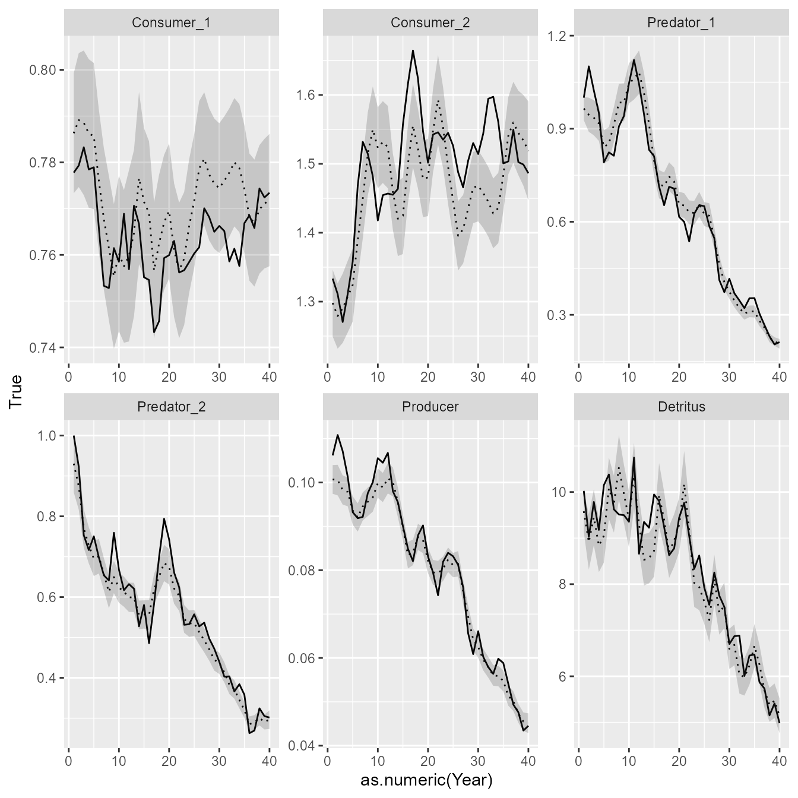

Demonstrating EcoState via simulation
James Thorson
Source:vignettes/not_on_cran/simulation.Rmd
simulation.Rmdecostate is an R package for fitting the mass-balance
dynamics specified by EcoSim as a state-space model. We here highlight a
few features in particular.
Simulation demonstration
We first simulate new data. To do so, we specify a 5-species ecosystem:
# Time-interval
years = 1981:2020
n_years = length(years)
# Name taxa (optional, for illustration)
taxa = c("Consumer_1", "Consumer_2", "Predator_1", "Predator_2", "Producer", "Detritus")
n_species = length(taxa)
# Ecopath-with-EcoSim parameters
# Diet matrix
DC_ij = matrix( c(
0, 0, 0.8, 0.4, 0, 0,
0, 0, 0.2, 0.6, 0, 0,
0, 0, 0, 0, 0, 0,
0, 0, 0, 0, 0, 0,
0.9, 0.3, 0, 0, 0, 0,
0.1, 0.7, 0, 0, 0, 0
), byrow=TRUE, ncol=n_species)
PB_i = c( 4, 1, 0.2, 0.1, 90, 0.5 ) # Reciprocal of mean age according to Polovina-1984 ~= M
QB_i = c( 10, 4, 3, 1, NA, NA )
EE_i = c( 0.9, 0.9, NA, NA, 0.9, 0.9 )
B_i = c( NA, NA, 1, 1, NA, NA )
U_i = rep( 0.2, n_species )
type_i = c( "hetero", "hetero", "hetero", "hetero", "auto", "detritus" )
which_primary = which(type_i=="auto")
which_detritus = which(type_i=="detritus")
X_ij = matrix( 2, nrow=n_species, ncol=n_species )
X_ij[,which_primary] = 91We first define a function that simulates data, using the same functions for mass-balance and simulating dynamics are then used by EcoState during parameter estimation:
simulate_data = function(){
# Simulate process errors
set.seed(101)
rarray = \(x,dims=dim(x),sd) array( sd*rnorm(prod(dims)), dim=dims )
epsilon_ti = rarray(dims=c(n_years,n_species),sd=1) * outer(rep(1,n_years),sigmaB_i)
# Choose method to integrate instantaneous rates for annual dynamics
n_steps = 10
project_vars = abm3pc_sys
# Define parameters
Pars = list( logB_i = log( B_i ),
logPB_i = log(PB_i),
logQB_i = log(QB_i),
Xprime_ij = log(X_ij - 1),
EE_i = EE_i,
DC_ij = DC_ij,
U_i = U_i,
type_i = type_i,
noB_i = ifelse( is.na(B_i), 1, 0),
epsilon_i = rep(0,n_species),
logF_i = rep(-Inf,n_species) )
#which_detritus = which_detritus,
#which_primary = which_primary,
#F_type = "integrated" )
Pars_full = add_equilibrium( Pars,
scale_solver = "joint",
noB_i = ifelse(is.na(Pars$logB_i),1,0),
type_i = type_i )
# Project forward
Bobs_ti = Cobs_ti = B_ti = C_ti = array( NA, dim=c(n_years,n_species),
dimnames=list("Year"=years,"Taxon"=taxa) )
B_ti[1,] = exp(Pars_full$logB_i)
C_ti[1,] = NA
for( t in seq_along(years)[-1] ){
# Fishing mortality ramps up for two predators
F_t = c( 0, 0, t/n_years*0.2, t/n_years*0.1, 0, 0 )
#
pars_t = Pars_full
pars_t$logF_i = log(F_t)
pars_t$epsilon_i = epsilon_ti[t,]
pars_t$nu_i = rep(0,n_species)
# Integrate dynamics annually
#data2 = local({
# n_species = n_species
# environment()
#})
#environment(dBdt) <- data2
sim = project_vars(
f = dBdt,
a = years[t-1],
b = years[t],
n = n_steps,
Pars = pars_t,
type_i = type_i,
n_species = n_species,
F_type = "integrated",
y0 = c( B_ti[t-1,], rep(0,n_species) ) )
# Record results
B_ti[t,] = sim$y[nrow(sim$y),seq_len(n_species)]
C_ti[t,] = sim$y[nrow(sim$y),n_species+seq_len(n_species)]
# Simulate measurement errors
Bobs_ti[t,] = B_ti[t,] * exp(0.1*rnorm(n_species))
Cobs_ti[t,] = ifelse(C_ti[t,]==0,NA,C_ti[t,]) * exp(0.1*rnorm(n_species))
}
return( list( "B_ti"=B_ti, "C_ti"=C_ti, "Bobs_ti"=Bobs_ti,
"Cobs_ti"=Cobs_ti, "Pars_full"=Pars_full) )
}Comparison with Rpath
We first compare the functions used by EcoState with existing implementations of the model. One script-based implementation available in R is Rpath, and we therefore show the syntax and model-output for this comparison. For this comparison, we first simulate a data set that does not have any process errors:
sigmaB_i = c(0, 0, 0, 0, 0, 0) # Taxa 1-2 crashes solver if sigmaB > 0.02
sim = simulate_data()We then load Rpath and reformat inputs in the format
that it expects to calculate mass-balance:
# Rpath needs types in ascending order (EcoState doesn't care)
types <- sapply( c(type_i,"fishery"), FUN=switch,
"hetero"==0, "auto"=1, "detritus"=2, "fishery"=3 )
groups <- c( taxa, "fishery" )
stgroups = rep(NA, length(groups) )
REco.params <- create.rpath.params(group = groups, type = types, stgroup = stgroups)
# Fill in biomass
#REco.params$model$Biomass = c( exp(Pars_full$logB_i), NA )
REco.params$model$Biomass = c( B_i, NA )
REco.params$model$EE = c( ifelse(type_i=="detritus",NA,EE_i), NA )
REco.params$model$PB = c( PB_i, NA )
REco.params$model$QB = c( QB_i, NA )
#Biomass accumulation and unassimilated consumption
REco.params$model$BioAcc = c( rep(0,length(taxa)), NA )
REco.params$model$Unassim = c( ifelse(type_i=="hetero",0.2,0), NA )
#Detrital Fate
REco.params$model$Detritus = c( ifelse(type_i=="detritus",0,1), 0 )
REco.params$model$fishery = c( rep(0,length(taxa)), NA )
REco.params$model$fishery.disc = c( rep(0,length(taxa)), NA )
# Diet
for(j in 1:5) REco.params$diet[seq_along(taxa),j+1] = DC_ij[,j]
REco.params$diet[seq_along(taxa),2] = DC_ij[,1]
# Balance using Ecopath equations
check.rpath.params( REco.params)
#> Rpath parameter file is functional.
REco <- rpath(REco.params, eco.name = 'R Ecosystem')We can then simulate forward in time using Rpath:
# Create simulation object
REco.sim <- rsim.scenario(REco, REco.params, years = 1:40)
#
REco.sim = adjust.fishing( Rsim.scenario=REco.sim,
parameter='ForcedFRate',
group = 'Predator_1', # Group is which species to apply
sim.year = 1:40,
sim.month = 0,
value = (1:40/40)*0.2 )
REco.sim = adjust.fishing( Rsim.scenario=REco.sim,
parameter='ForcedFRate',
group = 'Predator_2', # Group is which species to apply
sim.year = 1:40,
sim.month = 0,
value = (1:40/40)*0.1 )
# Match vulnerability for self-limitation in Producers
REco.sim$params$VV[which(REco.sim$params$PreyFrom==0 & REco.sim$params$PreyTo==5)] = 91
#
REco.run1 <- rsim.run(REco.sim, method = 'RK4', years = 1:40)Comparing the scenario forecasted with Rpath against the simulated time-series, we see that the two closely match. EcoState uses the same functions during fitting, and so it also closely matches Rpath.
# Calculate annual simulated catch
Year = rep( years, each=12)
Bsim_ti = apply( REco.run1$out_Biomass[,-1], MARGIN=2, FUN=\(x) tapply(x,INDEX=Year,FUN=mean) )
#
par(mfrow=c(2,1), mar=c(3,3,1,1), mgp=c(2,0.5,0) )
matplot( x=years, y=Bsim_ti / outer(rep(1,n_years),Bsim_ti[1,]),
type="l", lwd=3, lty="solid", col=rainbow(n_species), log="y",
ylab="Relative biomass (Rpath)", xlab="Year" )
Brel_ti = sim$B_ti / outer(rep(1,n_years),sim$B_ti[1,])
matplot( x=years, y=sim$B_ti / outer(rep(1,n_years),sim$B_ti[1,]),
type="l", lwd=3, lty="solid", col=rainbow(n_species), log="y",
ylab="Relative biomass (Simulated)", xlab="Year" )
legend("bottomleft", fill=rainbow(n_species), legend=taxa, ncol=2, bty="n")
Fitting the model using EcoState
We next want to show how EcoState performs when fitting to simulated data. We simulate a data set that has process errors, and plot it to compare with the previous simulation that did not have process errors:
# Simulate new data
sigmaB_i = c(0.02, 0.02, 0.1, 0.1, 0.1, 0.1) # Taxa 1-2 crashes solver if sigmaB > 0.02
sim = simulate_data()
# Unload simulated data
Bobs_ti = sim$Bobs_ti
Cobs_ti = sim$Cobs_ti
B_ti = sim$B_ti
Pars_full = sim$Pars_full
# Plot simulation with process errors
matplot( x=years, y=B_ti / outer(rep(1,n_years),B_ti[1,]),
type="l", lwd=3, lty="solid", col=rainbow(n_species), log="y",
ylab="Relative biomass (simulated)", xlab="Year" )
We then reformat simulated biomass and catch time-series into
long-form data frames and fit them with ecostate
# reformat to longform data-frame
Catch = na.omit(data.frame(expand.grid(dimnames(Cobs_ti)), "Mass"=as.vector(Cobs_ti)))
Biomass = na.omit(data.frame(expand.grid(dimnames(Bobs_ti)), "Mass"=as.vector(Bobs_ti)))
# Settings: specify what parameters to estimate
fit_eps = c("Producer", "Detritus", "Predator_1", "Predator_2") # process errors
fit_Q = c() # catchability coefficient
fit_B0 = c() # non-equilibrium initial condition
fit_B = taxa # equilibrium biomass
# Solving for EE and giving uninformed initial values for biomass
fittedB_i = exp(Pars_full$logB_i)
fittedEE_i = rep(NA, n_species)
# Label EwE inputs for each taxon as expected (so users can easily change taxa)
names(PB_i) = names(QB_i) = names(fittedB_i) = names(fittedEE_i) = names(type_i) = names(U_i) = taxa
dimnames(DC_ij) = dimnames(X_ij) = list("Prey"=taxa, "Predator"=taxa)
# Define priors
log_prior = function(p){
# Prior on process-error log-SD to stabilize model
logp = sum(dnorm( p$logtau_i, mean=log(0.2), sd=1, log=TRUE ), na.rm=TRUE)
}
# Run model
out = ecostate( taxa = taxa,
years = years,
catch = Catch,
biomass = Biomass,
PB = PB_i,
QB = QB_i,
DC = DC_ij,
B = fittedB_i,
EE = fittedEE_i,
X = X_ij,
type = type_i,
U = U_i,
fit_B = fit_B,
fit_Q = fit_Q,
fit_eps = fit_eps,
fit_B0 = fit_B0,
log_prior = log_prior,
control = ecostate_control( # Much faster to turn off
tmbad.sparse_hessian_compress = 0,
# Faster to profile these
profile = c("logF_ti","logB_i"),
# More stable when starting low
start_tau = 0.001 ))
# print output to terminal
out
#> Dynamics integrated using ABM with 10 time-steps
#> Run time: Time difference of 3.585301 mins
#> Negative log-likelihood: -257.8807
#>
#> EcoSim parameters:
#> type QB PB B EE U
#> Consumer_1 hetero 10 4.0 0.7862833 0.8547194 0.2
#> Consumer_2 hetero 4 1.0 1.2979525 0.8762152 0.2
#> Predator_1 hetero 3 0.2 0.9650080 0.0000000 0.2
#> Predator_2 hetero 1 0.1 0.9304681 0.0000000 0.2
#> Producer auto NA 90.0 0.1006972 0.9527011 0.2
#> Detritus detritus NA 0.5 9.5823731 0.9226421 0.2
#>
#> EcoSim diet matrix:
#> Predator
#> Prey Consumer_1 Consumer_2 Predator_1 Predator_2 Producer Detritus
#> Consumer_1 0.0 0.0 0.8 0.4 0 0
#> Consumer_2 0.0 0.0 0.2 0.6 0 0
#> Predator_1 0.0 0.0 0.0 0.0 0 0
#> Predator_2 0.0 0.0 0.0 0.0 0 0
#> Producer 0.9 0.3 0.0 0.0 0 0
#> Detritus 0.1 0.7 0.0 0.0 0 0
#>
#> EcoSim vulnerability matrix:
#> Predator
#> Prey Consumer_1 Consumer_2 Predator_1 Predator_2 Producer Detritus
#> Consumer_1 2 2 2 2 91 2
#> Consumer_2 2 2 2 2 91 2
#> Predator_1 2 2 2 2 91 2
#> Predator_2 2 2 2 2 91 2
#> Producer 2 2 2 2 91 2
#> Detritus 2 2 2 2 91 2
#>
#> Estimates: sdreport(.) result
#> Estimate Std. Error
#> logtau_i -2.395457 0.1999421
#> logtau_i -2.528423 0.2809718
#> logtau_i -1.815466 0.7800328
#> logtau_i -2.160598 0.2680706
#> Maximum gradient component: 1.367582e-06Finally, we can extract elements from the fitted model, and plot them easily using ggplot2 to compare them with known (simulated) values. This exercise shows that EcoState can accurately estimate biomass trends:
# Extract estimated biomass
Bhat_ti = out$derived$Est$B_ti
Bse_ti = out$derived$SE$B_ti
# Reformat to long-form data frame for ggplot
results = expand.grid(dimnames(Bobs_ti))
results = cbind( results,
"True" = as.vector(B_ti),
"Est" = as.vector(Bhat_ti),
"SE" = as.vector(Bse_ti) )
# Plot using ggplot
library(ggplot2)
ggplot(results) +
geom_line( aes(x=as.numeric(Year), y=True) ) +
facet_wrap( vars(Taxon), scale="free" ) +
geom_line( aes(x=as.numeric(Year), y=Est), linetype="dotted" ) +
geom_ribbon( aes(x=as.numeric(Year), ymin=Est-SE, ymax=Est+SE), alpha=0.2) 
Advanced: estimating vulnerability parameters
We can also explore estimating additional parameters. Here, we explore estimating vulnerability:
# Define priors
log_prior = function(p){
# Prior on process-error log-SD to stabilize model
logp = sum(dnorm( p$logtau_i, mean=log(0.2), sd=1, log=TRUE ), na.rm=TRUE)
# Prior on vulnerability to stabilize model (single value mirrored below)
logp = logp + dnorm( p$Xprime_ij[1,1], mean=0, sd=1, log=TRUE )
}
# Run model
out0 = ecostate( taxa = taxa,
years = years,
catch = Catch,
biomass = Biomass,
PB = PB_i,
QB = QB_i,
DC = DC_ij,
B = fittedB_i,
EE = fittedEE_i,
X = X_ij,
type = type_i,
U = U_i,
fit_B = fit_B,
fit_Q = fit_Q,
fit_eps = fit_eps,
fit_B0 = fit_B0,
log_prior = log_prior,
control = ecostate_control( inverse_method = "Standard",
nlminb_loops = 0,
tmbad.sparse_hessian_compress = 0,
getsd = FALSE,
process_error = "epsilon",
profile = c("logF_ti","logB_i"),
start_tau = 0.1 ))
# Change tmb_par
tmb_par = out0$tmb_inputs$p
tmb_par$Xprime_ij[,which(type_i!="auto")] = log(1.5 - 1)
map = out0$tmb_inputs$map
map$Xprime_ij = array(NA, dim=dim(tmb_par$Xprime_ij))
map$Xprime_ij[,which(type_i!="auto")] = 1
map$Xprime_ij = factor(map$Xprime_ij)
# Run model
out = ecostate( taxa = taxa,
years = years,
catch = Catch,
biomass = Biomass,
PB = PB_i,
QB = QB_i,
DC = DC_ij,
B = fittedB_i,
EE = fittedEE_i,
X = X_ij,
type = type_i,
U = U_i,
fit_B = fit_B,
fit_Q = fit_Q,
fit_eps = fit_eps,
fit_B0 = fit_B0,
log_prior = log_prior,
control = ecostate_control( inverse_method = "Standard",
nlminb_loops = 1,
tmbad.sparse_hessian_compress = 0,
getsd = TRUE,
process_error = "epsilon",
profile = c("logF_ti","logB_i"),
start_tau = 0.001,
tmb_par = tmb_par,
map = map )) # alpha is faster than epsilon
#> Using `control$tmb_par`, so be cautious in constructing it
#> Using `control$map`, so be cautious in constructing it
# print output to terminal
out
#> Dynamics integrated using ABM with 10 time-steps
#> Run time: Time difference of 4.339845 mins
#> Negative log-likelihood: -256.9749
#>
#> EcoSim parameters:
#> type QB PB B EE U
#> Consumer_1 hetero 10 4.0 0.7859114 0.8583339 0.2
#> Consumer_2 hetero 4 1.0 1.2992375 0.8788253 0.2
#> Predator_1 hetero 3 0.2 0.9685480 0.0000000 0.2
#> Predator_2 hetero 1 0.1 0.9344566 0.0000000 0.2
#> Producer auto NA 90.0 0.1008355 0.9511963 0.2
#> Detritus detritus NA 0.5 9.5883393 0.9227409 0.2
#>
#> EcoSim diet matrix:
#> Predator
#> Prey Consumer_1 Consumer_2 Predator_1 Predator_2 Producer Detritus
#> Consumer_1 0.0 0.0 0.8 0.4 0 0
#> Consumer_2 0.0 0.0 0.2 0.6 0 0
#> Predator_1 0.0 0.0 0.0 0.0 0 0
#> Predator_2 0.0 0.0 0.0 0.0 0 0
#> Producer 0.9 0.3 0.0 0.0 0 0
#> Detritus 0.1 0.7 0.0 0.0 0 0
#>
#> EcoSim vulnerability matrix:
#> Predator
#> Prey Consumer_1 Consumer_2 Predator_1 Predator_2 Producer Detritus
#> Consumer_1 1.977243 1.977243 1.977243 1.977243 91 1.977243
#> Consumer_2 1.977243 1.977243 1.977243 1.977243 91 1.977243
#> Predator_1 1.977243 1.977243 1.977243 1.977243 91 1.977243
#> Predator_2 1.977243 1.977243 1.977243 1.977243 91 1.977243
#> Producer 1.977243 1.977243 1.977243 1.977243 91 1.977243
#> Detritus 1.977243 1.977243 1.977243 1.977243 91 1.977243
#>
#> Estimates: sdreport(.) result
#> Estimate Std. Error
#> Xprime_ij -0.02302001 0.1539942
#> logtau_i -2.39718954 0.2012940
#> logtau_i -2.51981549 0.2867294
#> logtau_i -1.77412399 0.8408468
#> logtau_i -2.15986779 0.2684473
#> Maximum gradient component: 2.810887e-05Runtime for this vignette: 8.02 mins